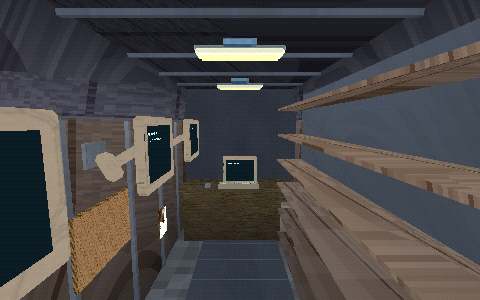
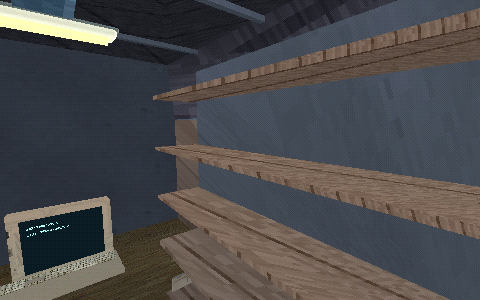
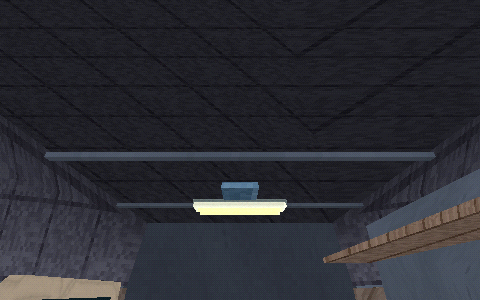
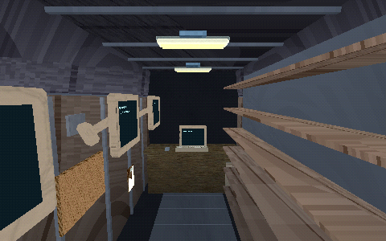
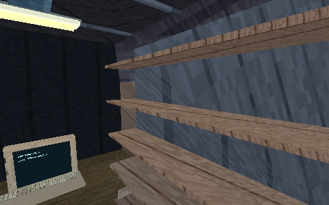
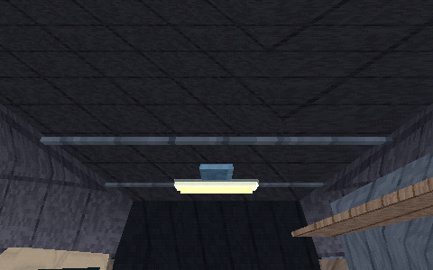
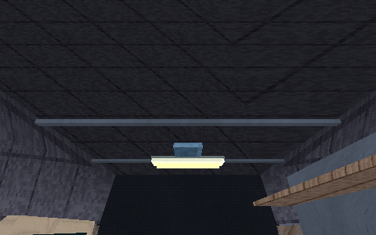

27 October 2026. The original generated metal tile had an explicit dark column every eight pixels. Repeated UVs turned that into stripes across the van shell. The revised original procedural tile uses subtle two-dimensional wear. All15other atlas tiles are byte-identical; renderer, fixtures, geometry and exposure are unchanged in these matched captures.
Van lights on their own supply; flashlight and site breaker OFF. Actual OpenGL frames at480×300. Still images, not frame-time or human acceptance. Other native model textures and metal families require separate review.
Hashes and measurements · Shared gallery









